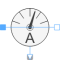

CurrentSensorCurrent sensor |

|
Information
This information is part of the Modelica Standard Library maintained by the Modelica Association.
This sensor can be used to measure the complex current.
See also
ReferenceSensor, FrequencySensor, PotentialSensor, VoltageSensor, PowerSensor, MultiSensor
Connectors (3)
| pin_p |
Type: PositivePin Description: Positive quasi-static single-phase pin |
|
|---|---|---|
| pin_n |
Type: NegativePin Description: Negative quasi-static single-phase pin |
|
| i |
Type: ComplexOutput Description: Complex current |
Components (1)
| v |
Type: ComplexVoltage Description: Complex voltage |
|---|
Used in Examples (9)
|
Modelica.Electrical.QuasiStatic.SinglePhase.Examples Series circuit with Bode analysis |
|
|
Modelica.Electrical.QuasiStatic.SinglePhase.Examples Series resonance circuit |
|
|
Modelica.Electrical.QuasiStatic.SinglePhase.Examples Rectifier example |
|
|
Modelica.Electrical.QuasiStatic.SinglePhase.Examples Example of transformer with short circuit impedance, transmission resistances and load |
|
|
Modelica.Electrical.QuasiStatic.Polyphase.Examples Balancing an unsymmetrical star-connected load |
|
|
Modelica.Electrical.QuasiStatic.Polyphase.Examples Balancing an unsymmetrical delta-connected load |
|
|
Modelica.Electrical.QuasiStatic.Polyphase.Examples Unsymmetrical three-phase load |
|
|
Modelica.Magnetic.QuasiStatic.FluxTubes.Examples Linear inductor with ferromagnetic core |
|
|
Modelica.Magnetic.QuasiStatic.FluxTubes.Examples Non linear inductor with ferromagnetic core |
Used in Components (2)
|
Modelica.Electrical.QuasiStatic.Polyphase.Sensors Current Sensor |
|
|
Modelica.Electrical.QuasiStatic.Polyphase.Sensors Continuous quasi current RMS sensor for polyphase system |